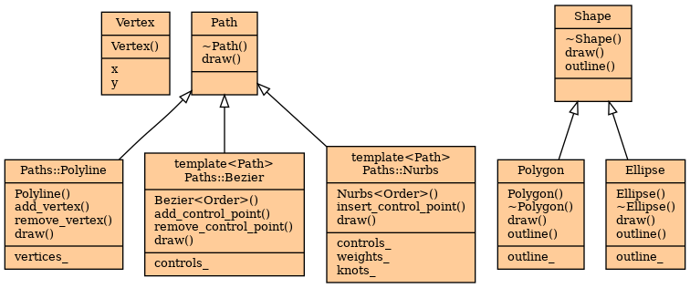

Diagrams
All the following diagrams are generated with the Synopsis.Formatter.Dot module, which runs the dot tool that is part of graphviz.
Here is an include dependency graph:

It is generated using the Synopsis.Parsers.Cpp module to analyze include directives in C++ source code.
The following is an UML class diagram, generated with the Synopsis.Parsers.Cxx module from C++ source code.
